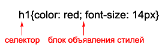
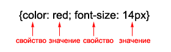
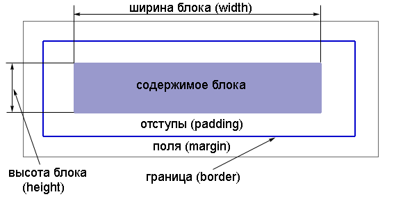

HTML - это язык разметки, а CSS визуальное оформление страницы. Используя HTML совместно с CSS позволит Вам творить чудеса!
CSS (Cascading Style Sheets) - каскадные таблицы стилей. Стиль в свою очередь это набор параметров, задающий внешнее представление объекта.
Подключение происходит за счет тега <link>
В разделе head прописываем подключение следующим образом: <link rel="stylesheet" type="text/css" href="/style.css">, где вместо "style.css" прописываем название нашего CSS-файла.
Стоит понимать, что таблица каскадных стилей состоит из набора правил и стилей, заключенных в фигурные скобки, Их задают следующим образом:
Блок объявления стилей состоит из свойств и значения свойства, разделяются они точкой с запятой, как в примере ниже:
Для того, чтобы обратиться к классу, перед селектором ставится точка перед селектором. Для того, чтобы обратиться к id, ставим сначала решетку.
Страница сверстанная при помощи блочной верстке представляет собой множество блоков. Каждый элемент в дереве элементов это самостоятельный блок.
Блок выглядит в виде прямоугольника:
